4130A13 POWER ASSISTED STEERING BOX - R.R. - If necessary. check wheel toe in separately - Includes. bleeding air - on right hand drive versions
- Path
- Procedures > 41 STEERING > 4130 POWER ASSISTED STEERING > 4130A power steering box > 4130A13 POWER ASSISTED STEERING BOX - R.R. - If necessary. check wheel toe in separately - Includes. bleeding air - on right hand drive versions
- Kind
- repair procedure (removal / refitting; the operation number is the code)
- Applies to
- engines: 1.6 TS , 1.8 TS, 2.5 V6, 2.4 JTD 10v; all production periods
- Interactive page
- https://sloeber94.github.io/elrnDB-a156/en/#/3238157
Applies to: engines: 1.6 TS , 1.8 TS; all production periods; only with equipment: Right hand drive
 Removing
Removing
 Refitting
RefittingPlace the car on a ramp with the wheels perfectly straight.
Mark the position of the steering wheel in relation to the upper steering column shroud.
Drain the power steering fluid from the reservoir using a suitable syringe.
1. Undo the fixing bolt (1a) and disconnect the lower steering control shaft (1b) from the power steering box pinion.
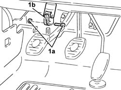
Applies to: engines: 1.6 TS , 1.8 TS; all production periods; only with equipment: Right hand drive
4450B12 front or rear wheels (two) - r+r .
1. Undo the nut (1a) and disconnect the track rods (1b) from the steering knuckles usiing the tool (1c).
 | Name | Country |
|---|---|---|
1c | Extractor | 1.821.169.000 |
2. Undo the nut (2a) and disconnect the front anti-roll bar joints (2b) from the lower suspension forks.
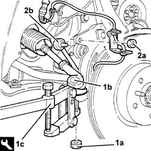
Applies to: engines: 1.6 TS , 1.8 TS; all production periods; only with equipment: Right hand drive
7055B54 under-engine guard - r r .
1076B50 exhaust pipe attachment to engine - r + r .
1076A32 exhaust rigid mount - r r .
1008A44 rear rigid mount - r r .
1. Undo the bolts (1a) and nuts (1b) of the gearlever and handbrake lever mount (1c).
2. Position a hydraulic jack complete with a suitable flange and secure it to the suspension crossmember.
3. Undo the bolts (3a) securing the front suspension beam (3b) to the body, then lower as required using the hydraulic jack.
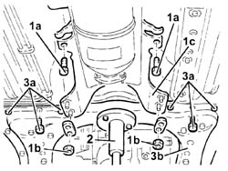
Applies to: engines: 1.6 TS , 1.8 TS; all production periods; only with equipment: Right hand drive
1. Undo the connector (1a) and disconnect the delivery pipe from pump to power steering box (1b), steering box side.
2. Undo the connector (2a) and disconnect the rigid return pipe between the power steering box and heat exchanger (2b), power steering box side.
Release the power steering pipes from the band on the power steering box.
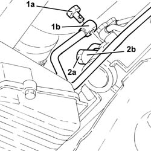
Applies to: engines: 1.6 TS , 1.8 TS; all production periods; only with equipment: Right hand drive
1. Undo the bolts (1a) and remove the power steering box (1b) by withdrawing from the right wheel arch.
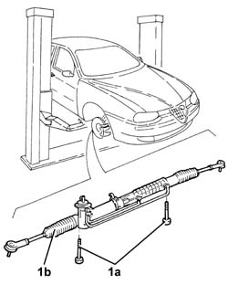
Applies to: engines: 1.6 TS , 1.8 TS; all production periods; only with equipment: Right hand drive
Refitting
RemovingRefit the power steering box in its seating and secure to the front suspension beam by tightening its bolts to the specified torque.
 | Fastening | Component | Ø | Value (daNm) |
|---|---|---|---|---|
- | Connector | POWER STEERING BOX | M10 | (Front suspension crossmember side) 1.3 - 1.5 |
Secure the power steering pipes with the bands on the power steering box.
1. Connect the rigid return pipe between power steering box and heat exchanger (1a), power steering box side, and tighten the connector (1b) to the specified torque.
| Fastening | Component | Ø | Value (daNm) |
|---|---|---|---|---|
1b | Connector | POWER STEERING BOX/EXCHANGE RIGID PIPE | M12 | (Power steering box side) 2.8 - 3.2 |
2. Connect the supply pipe from the pump to the power assisted steering box (2a), power assisted steering box side, and tighten the connector (2b) to the recommended torque.
| Fastening | Component | Ø | Value (daNm) |
|---|---|---|---|---|
2b | Connector | PIPE BTWN PUMP + POWER STEERING BOX | M14 | Power steering box side 3.8 - 4.2 |
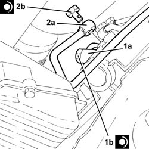
Applies to: engines: 1.6 TS , 1.8 TS; all production periods; only with equipment: Right hand drive
Place the front suspension crossmember in its housing with the hydraulic jack, then secure it to the body by tightening the relevant bolts to the specified torque.
| Fastening | Component | Ø | Value (daNm) |
|---|---|---|---|---|
- | Bolt | ENGINE OR ROD ANCHORAGE BEAM | M12 | (Bodyshell side) 10.8 - 13.2 |
| Fastening | Component | Ø | Value (daNm) |
|---|---|---|---|---|
- | Bolt | ENGINE OR ROD ANCHORAGE BEAM | M10 | (Bodyshell side) 8.1 ÷ 9.9 |
Remove the hydraulic jack complete with flange supporting the suspension crossmember.
Tighten the nuts and bolts on the gearlever and handbrake lever mount.
1008A44 rear rigid mount - r r .
1076A32 exhaust rigid mount - r r .
1076B50 exhaust pipe attachment to engine - r + r .
7055B54 under-engine guard - r r .
1. Connect the front anti-roll bar joints (1a) to the lower suspension forks and tighten the relevant nuts (1b) to the specified torque.
| Fastening | Component | Ø | Value (daNm) |
|---|---|---|---|---|
1b | Nut | FRONT ANTI-ROLL BAR JOINTS | M10 | 3.8 - 4.7 |
2. Connect the track rods (2a) to the wheel struts and secure with the relevant nuts (2b) to the specified torque.
| Fastening | Component | Ø | Value (daNm) |
|---|---|---|---|---|
2b | Nut | ADJUSTABLE STEERING LINKS | M14 | Wheel damper side 2.9 - 3.6 |
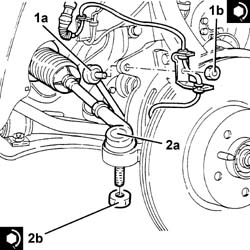
Applies to: engines: 1.6 TS , 1.8 TS; all production periods; only with equipment: Right hand drive
4450B12 front or rear wheels (two) - r+r .
1. Connect the lower steering control shaft (1a) to the power assisted steering box pinion and secure it tightening the bolt (1b) to the recommended torque.
| Fastening | Component | Ø | Value (daNm) |
|---|---|---|---|---|
1b | Bolt | STEERING SHAFT JOINTS | M8 | Power assisted steering box side 1.9 - 2.1 |
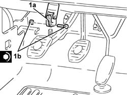
Applies to: engines: 1.6 TS , 1.8 TS; all production periods; only with equipment: Right hand drive
Fill the power steering circuit with the recommended fluid.
 | Type | Component | Name | Qty. |
|---|---|---|---|---|
- | Fluid | POWER ASSISTED STEERING CIRCUIT | TUTELA GI/A | - |
Bleed the power steering system as described below
With the front wheels raised off the ground, with the engine switched off turn the steering wheel to full lock, left and right, 4-5 times.
Check and, if necessary, top up the fluid level in the reservoir.
Position the vehicle on the ground and start up the engine.
Carry out 4 - 5 complete steering wheel rotation cycles (right and left).
Top up the fluid level in the reservoir.
Applies to: engines: 2.5 V6; all production periods; only with equipment: Right hand drive
Removing
RefittingPlace the car on a ramp with the wheels perfectly straight.
Mark the position of the steering wheel in relation to the upper steering column shroud.
Drain the power steering fluid from the reservoir using a suitable syringe.
1. Undo the fixing bolt (1a) and disconnect the lower steering control shaft (1b) from the power steering box.
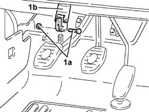
Applies to: engines: 2.5 V6; all production periods; only with equipment: Right hand drive
4450B12 front or rear wheels (two) - r+r
1. Undo nut (1a) and disconnect steering links (1b) from the wheel struts using tool (1c).
| Name | Country |
|---|---|---|
- | Extractor | 1.821.169.000 |
2. Undo the nut (2a) and disconnect the front anti-roll bar joints (2b) from the lower suspension forks.
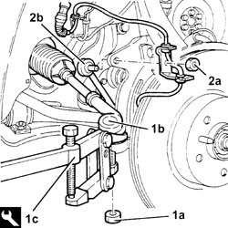
Applies to: engines: 2.5 V6; all production periods; only with equipment: Right hand drive
7055B54 under-engine guard - r r
1076B52 exhaust pipe (one) leaving l/h or r/h exhaust manifold - r + r (left and right)
1. Position a hydraulic jack under the differential.
2. Undo bolts (2a) and remove rear power unit mount assembly (2b).
3. Remove the rigid exhaust pipe support.
Remove the hydraulic jack from under the differential.
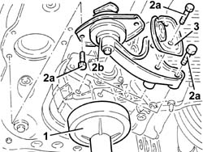
Applies to: engines: 2.5 V6; all production periods; only with equipment: Right hand drive
1. Undo the nuts (1a) and remove the protective heat shield (1b) from the power steering box.
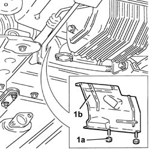
Applies to: engines: 2.5 V6; all production periods; only with equipment: Right hand drive
1. Undo the bolts (1a) and the nut (1b) and remove the power steering pipe mount (1c).
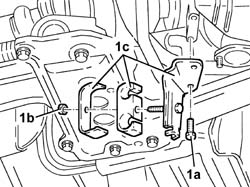
Applies to: engines: 2.5 V6; all production periods; only with equipment: Right hand drive
1. Undo the bolts (1a) and nuts (1b) of the gearlever and handbrake lever mount (1c).
2. Position a hydraulic jack complete with a suitable flange and secure it to the suspension crossmember.
3. Undo the bolts (3a) securing the front suspension beam (3b) to the body, then lower as required using the hydraulic jack.
Applies to: engines: 2.5 V6; all production periods; only with equipment: Right hand drive
Working from the right front wheelarch, open the power steering pipe collar.
1. Disconnect the fluid inlet and outlet connectors from the power assisted steering box.
2. Undo bolts (2a) and remove mounting bracket (2b) complete with gear selector/engagement cables from the power steering box.
Open the pipe collars on the power steering box.
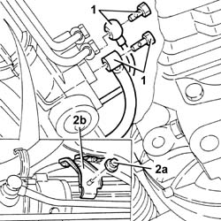
Applies to: engines: 2.5 V6; all production periods; only with equipment: Right hand drive
1. Working from the front right wheel arch, disconnect the hose from the rigid delivery pipe from the reservoir to the power steering pump.
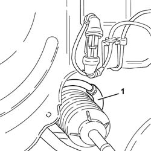
Applies to: engines: 2.5 V6; all production periods; only with equipment: Right hand drive
1. Undo the bolts (1a) and remove the power steering box (1b) by withdrawing from the right wheel arch.
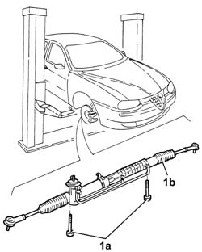
Applies to: engines: 2.5 V6; all production periods; only with equipment: Right hand drive
Refitting
Removing1. Fit the power steering box (1a) and secure to the suspension beam by tightening the bolts (1b) to the recommended torque.
| Fastening | Component | Ø | Value (daNm) |
|---|---|---|---|---|
1b | Bolt | POWER STEERING BOX | M14 | Suspension front. crossmember side 12.4 - 13.7 |
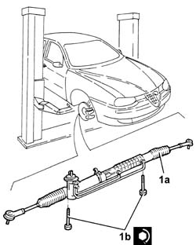
Applies to: engines: 2.5 V6; all production periods; only with equipment: Right hand drive
Working from the right front wheel arch, connect the hose to the rigid outlet pipe leading from the power steering reservoir to the pump.
Do up the pipe collars on the power steering box.
1. Place the mounting bracket (1a) back in its housing complete with gear selector/engagement cables (1b) and fix it with the bolt.
2. Connect the pump outlet pipe (2a) to the power steering box and tighten the connector (2b) to the specified torque.
| Fastening | Component | Ø | Value (daNm) |
|---|---|---|---|---|
2b | Connector | PIPE BTWN PUMP + POWER STEERING BOX | M14 | Power steering box side 3.8 - 4.2 |
3. Connect the fluid outlet hose (3a) to the power steering box and tighten the connector (3b) to the specified torque.
| Fastening | Component | Ø | Value (daNm) |
|---|---|---|---|---|
3b | Connector | POWER STEERING/EXCHANGE BOX RUBBER HOSE | M12 | Power steering box side 2.8 - 3.2 |
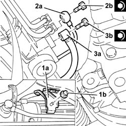
Applies to: engines: 2.5 V6; all production periods; only with equipment: Right hand drive
Working from the right front wheel arch, connect the power steering hose to the collar.
Place the front suspension crossmember in its housing secure to the body by tightening the bolts to the recommended torque.
| Fastening | Component | Ø | Value (daNm) |
|---|---|---|---|---|
- | Bolt | ENGINE OR ROD ANCHORAGE BEAM | M12 | (Bodyshell side) 10.8 - 13.2 |
| Fastening | Component | Ø | Value (daNm) |
|---|---|---|---|---|
- | Bolt | ENGINE OR ROD ANCHORAGE BEAM | M10 | (Bodyshell side) 8.1 ÷ 9.9 |
Tighten the bolts and nuts securing the gearlever and handbrake lever mount to the body.
Fit the power steering pipe mount and fix it using the bolts and nut.
Fit the heat shield and fix it to the power steering box using the nuts.
1. Position a hydraulic jack under the differential.
2. Fit power unit rear mount (2a) complete with rigid exhaust pipe mount (2b) and secure by tightening bolts (2c) and (2d) to torque.
| Fastening | Component | Ø | Value (daNm) |
|---|---|---|---|---|
2c | Bolt | POWER UNIT RIGID REAR MOUNT | M12 | (Gearbox side) 7.5 ÷ 9.2 |
| Fastening | Component | Ø | Value (daNm) |
|---|---|---|---|---|
2c | Bolt | POWER UNIT RIGID REAR MOUNT | M16 | Gearbox side 10.2 - 12.6 |
| Fastening | Component | Ø | Value (daNm) |
|---|---|---|---|---|
2d | Bolt | INTERM RUBBER MOUNT | M6 | Suspension front. crossmember side 2.7 - 3.4 |
Remove the hydraulic jack from under the differential.
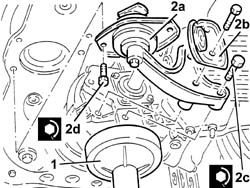
Applies to: engines: 2.5 V6; all production periods; only with equipment: Right hand drive
1076B52 exhaust pipe (one) leaving l/h or r/h exhaust manifold - r + r (left and right)
7055B54 under-engine guard - r r
Connect the front anti-roll bar joints to the lower suspension forks and tighten the nuts to the specified torque.
| Fastening | Component | Ø | Value (daNm) |
|---|---|---|---|---|
- | Nut | FRONT ANTI-ROLL BAR JOINTS | M10 | 3.8 ÷ 4.7 |
Connect the steering links to the wheel struts and secure by tightening the nut to the specified torque.
| Fastening | Component | Ø | Value (daNm) |
|---|---|---|---|---|
- | Nut | ADJUSTABLE STEERING LINKS | M14 | Wheel damper side 2.9 - 3.6 |
4450B12 front or rear wheels (two) - r+r
Connect the lower steering shaft to the power steering box and secure by tightening the bolt to the specified torque.
| Fastening | Component | Ø | Value (daNm) |
|---|---|---|---|---|
- | Bolt | STEERING SHAFT JOINTS | M8 | Power assisted steering box side 1.9 - 2.1 |
Remove the car from the ramps.
Refill the power steering system with the specified fluid.
| Type | Component | Name | Qty. |
|---|---|---|---|---|
- | Fluid | POWER ASSISTED STEERING CIRCUIT | TUTELA GI/A | 1.3 |
After bleeding the air, check the level of the power steering fluid again and top up, if necessary.
Applies to: engines: 2.4 JTD 10v; all production periods; only with equipment: Right hand drive
4130A10 power steering box - r+r - check tow-in if necessary separately - includes bleeding .
Topics linked from this page (7)
- 1008A44 rear rigid mount - r r
- 1076A32 exhaust rigid mount - r r
- 1076B50 exhaust pipe attachment to engine - r + r
- 1076B52 exhaust pipe (one) leaving l/h or r/h exhaust manifold - r + r
- 4130A10 power steering box - r+r - check tow-in if necessary separately - includes bleeding
- 4450B12 front or rear wheels (two) - r+r
- 7055B54 under-engine guard - r r